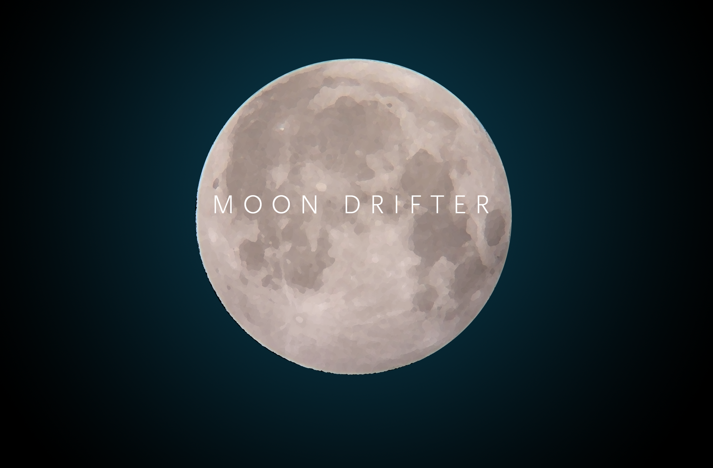
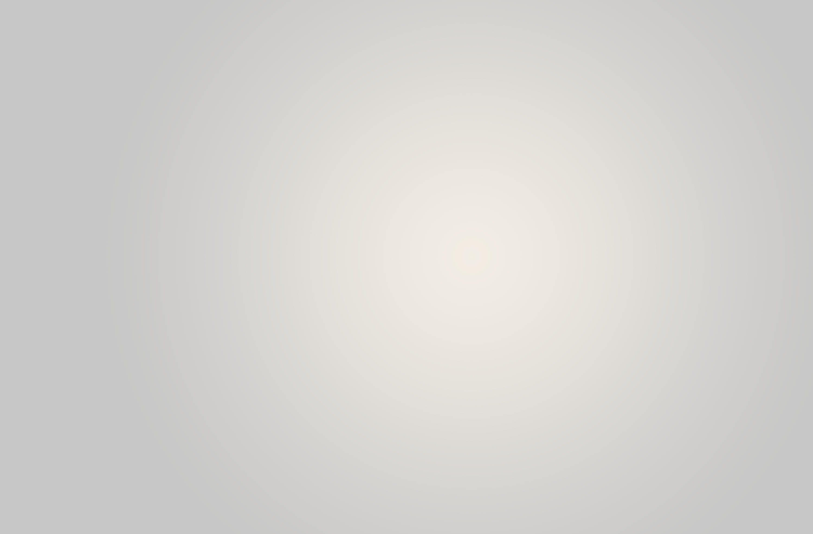
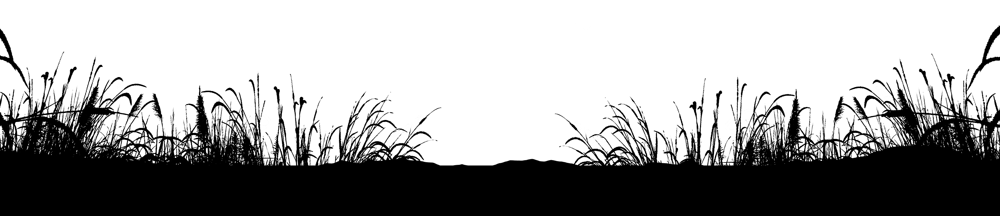

<DOCTYPE HTML>
<html>
<head>
  <style>
  * {
  box-sizing: border-box;
}

html,
body {
  background-color: #000000;
}

.parallax {
  -webkit-perspective: 100px;
          perspective: 100px;
  height: 100vh;
  overflow-x: hidden;
  overflow-y: auto;
  position: absolute;
  top: 0;
  left: 50%;
  right: 0;
  bottom: 0;
  margin-left: -1250px;
}

.parallax__layer {
  position: absolute;
  top: 0;
  right: 0;
  bottom: 0;
  left: 0;
}
.parallax__layer img {
  display: block;
  position: absolute;
  bottom: 0;
    width:100%;
}


.parallax__layer__6 img {
  display: block;
  position: absolute;
  bottom: 0px;

}


.parallax__layer__5 img {
  display: block;
  position: absolute;
  bottom: 50px;

}


.parallax__layer__4 img {
  display: block;
  position: absolute;
  bottom: 150px;
}

.parallax__layer__3 img {
  display: block;
  position: absolute;
  bottom: 200px;
}

.parallax__layer__2 img {
  display: block;
  position: absolute;
  bottom: 180px;
}

.parallax__layer__1 img {
  display: block;
  position: absolute;

  bottom: 50px;
}


.parallax__layer__0 img {
  display: block;
  position: absolute;
  width:100%;
  bottom: 50px;

}

.parallax__cover {
  background: #000000;
  position: absolute;
  top: 100%;
  left: 0;
  right: 0;
  height: 2000px;
  z-index: 2;

}

.parallax__layer__0 {
  -webkit-transform: translateZ(-300px) scale(4);
          transform: translateZ(-300px) scale(4);
}

.parallax__layer__1 {
  -webkit-transform: translateZ(-250px) scale(3.5);
          transform: translateZ(-250px) scale(3.5);
}

.parallax__layer__2 {
  -webkit-transform: translateZ(-200px) scale(3);
          transform: translateZ(-200px) scale(3);
}

.parallax__layer__3 {
  -webkit-transform: translateZ(-150px) scale(2.5);
          transform: translateZ(-150px) scale(2.5);
}

.parallax__layer__4 {
  -webkit-transform: translateZ(-100px) scale(2);
          transform: translateZ(-100px) scale(2);
}

.parallax__layer__5 {
  -webkit-transform: translateZ(-50px) scale(1.5);
          transform: translateZ(-50px) scale(1.5);
}

.parallax__layer__6 {
  -webkit-transform: translateZ(0px) scale(1);
          transform: translateZ(0px) scale(1);

}


#mp3{

  position:absolute;
  top:1000px;
  left:50%;
/*  margin-left:-100px;  */
  z-index:100;

}
  </style>

</head>
<body>


<div class="parallax">
  <div class="parallax__layer parallax__layer__0">
    
  </div>
  <div class="parallax__layer parallax__layer__1">
    
  </div>
  <div class="parallax__layer parallax__layer__2">
    
  </div>
  <div class="parallax__layer parallax__layer__3">
    
  </div>
  <div class="parallax__layer parallax__layer__4">
    
  </div>
  <div class="parallax__layer parallax__layer__5">
    
  </div>
  <div class="parallax__layer parallax__layer__6">
    
    </div>
  <div class="parallax__cover"></div>

<!--
  <audio id="mp3" autoplay="autoplay" controls="controls">
     <source src="music.mp3" />
  </audio>
-->

<div style="color:white;position:fixed;z-index:1000;">THIS IS A TES</div>

</div>


<script>

function testmargin(){
var windowwidth = window.innerWidth / 2;

var myElement = document.querySelector(".parallax");
myElement.style.marginLeft = "-" + windowwidth + "px";

}

testmargin();

window.onresize = function(){testmargin();}

</script>


</body>
</html>
